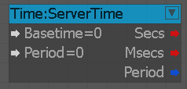
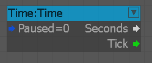
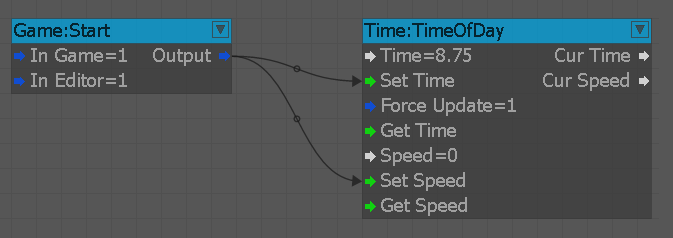

Задержка
Этот узел будет задерживать передачу сигнала от [Вход] к [Выход] на указанное количество секунд в [Задержка].
FrameDelay
Этот узел будет задерживать передачу сигнала от [Вход] к [Выход] на один кадр.
MeasureTime
Узел для измерения прошедшего времени.
RandomDelay
Этот узел будет задерживать передачу сигнала от [In] к [Out] на случайное время в интервале [MinDelay,MaxDelay]
RealTime
Этот узел считывает ваше системное время и может использоваться для таких целей, как отображение времени на часах игроков или синхронизация времени суток с реальным временем и т. д.
ServerTime
Считывает время сервера и сообщает текущее время (в секундах или миллисекундах) за указанный период.

Входы
| Порт | Тип | Описание |
|---|---|---|
| Базовое время | Плавать | Базовое время в секундах. Выходное время сервера относительно базового времени. Значение по умолчанию: 0 Допустимые значения: 0–100. |
| Период | Плавать | Количество секунд, которое должно пройти до сброса таймера на 0. Значение по умолчанию: 0 Допустимые значения: 0-100 |
Выходы
| Порт | Тип | Описание |
|---|---|---|
| Секунды | Целое число | Текущее время в секундах относительно базового времени |
| мсек | Целое число | Текущее время в миллисекундах относительно базового времени |
| Период | логическое значение | Запускает выходной сигнал «Период» один раз для каждого периода времени, как указано входными данными «Период». Допустимые значения: 0=ложь|1=истина. |
Время
Выводит общее количество секунд с начала игры, тикающее один раз за кадр.

Входы
| Порт | Тип | Описание |
|---|---|---|
| Приостановлено | логическое значение | Приостанавливает вывод времени, если установлено значение true. Значение по умолчанию: 0 Допустимые значения: 0=ложь|1=истина |
Выходы
| Порт | Тип | Описание |
|---|---|---|
| секунды | Плавать | Текущее время в секундах |
| поставить галочку | Любой | Запускает галочку один раз за кадр |
TimeOfDay
Запускает TimeOfDay, который установлен в узле потока и может изменять скорость его выполнения.
ForceUpdate должен быть включен. Тот же узел также может считывать текущую настройку TimeOfDay.

TimeOfDayLoadDefinitionFile
Загружает TOD (файл определения времени суток).
TimeOfDayTransitionTrigger
Изменение времени суток и положения солнца.
TimeOfDayTrigger
Работает как триггер при достижении определенного времени суток.
TimedCounter
Подсчитывает количество тиков, указанное в параметре «limit», а затем выводит «завершено» со значением, которое входное значение «start» имело при его срабатывании.
Таймер
Узел таймера будет выводить счетчик от минимального до максимального, тикающий в указанный период времени.